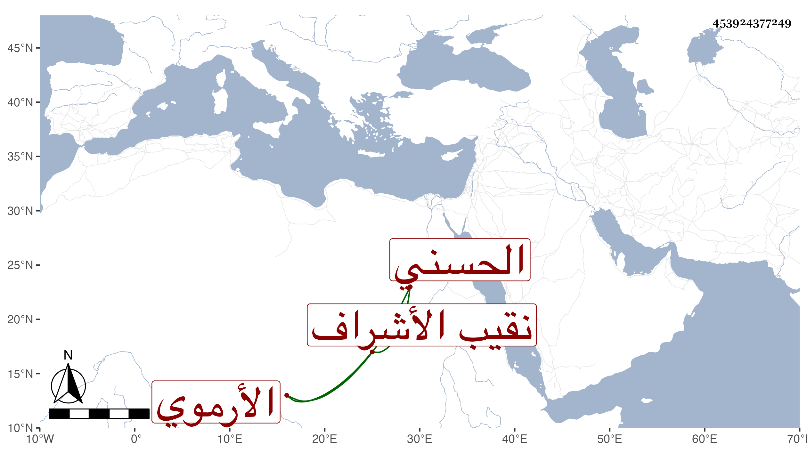

0902Sakhawi.DawLamic.ITO20230111-ara1.EIS1600.453924377249
Biography ID: 453924377249
420
حسن بن علي بن أحمد بن علي بن حسين بدر الدين بن العلاء بن الفخر الحسني الأرموي نقيب الأشراف كأبيه وجده ويعرف بنائب قاضي العسكر . استقر بعد أبيه في سنة إحدى وعشرين ، كان رئيسا ضخما كريما لكنه كان مسرفا على نفسه ولا يزال بسبب ذلك أكثر الأوقات في إملاق حتى أنه يحتاج إلى التعرض لمن يتوهم كونه دخيلا في الشرف ممن يستضعف جانبه وكذا كان أبوه ، ويحكى أن والده احتاج في تجهيز ابنة له يقال اسمها صرغتمش وسأل الجمالي الاستادار في مساعدته فكتب له بمائة ألف ، فرام الصيرفي دفعها له فقال بل امش معي لتباشر شراء ما أحتاج إليه وتدفع أنت الثمن وإلا فمتى أخذتها ضاعت في غير المقصود أو كما قال ففعل ، ولما علم الجمالي بذلك تحقق صدق مقاله وأنه لم يجعل ذلك وسيلة في الطلب فزاده مبلغا آخر ، ولا تصافه بما ذكرته مما كان السلطان يعرفه إذ كان يجىء وهو أمير لجار له تركي اسمه ارنبغا عزله عن النقابة في سنة أربع وأربعين بحسين بن أبي بكر الفراء الآتي ، واستمر معزولا حتى مات في صفر سنة ثلاث وخمسين . وله أخ اسمه حسين في قيد الحياة سنة إحدى وتسعين يتصرف في أبواب القضاة على هيئة إملاق .
